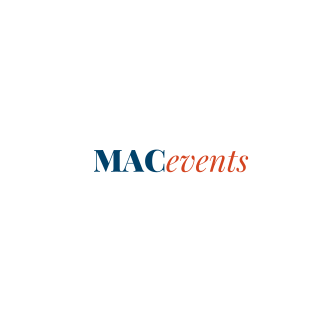

Projects

MacEventsApp
Collaborated with a team to build a Macalester Events app that collects and organizes campus events, making them easy for students and faculty to access and view.

Assistive Writing Tool
Worked with classmates to address the difficulty some individuals face when writing due to limited hand mobility. Our team designed and 3D printed an assistive device to make writing easier and more comfortable.

Mapping Prejudice - Ramsey County Schools
Our school collaborated with the Mapping Prejudice initiative to explore how historical racial covenants shaped access to charter, public, and private schools in Ramsey County. I created a map visualizing these patterns and supported the team with research and analysis to highlight the impact on education.